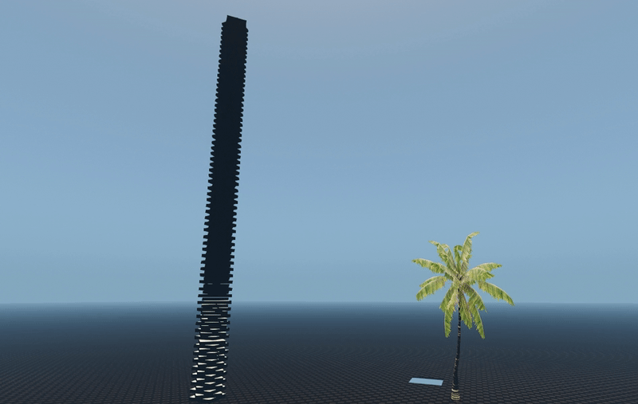

Обзор
Эта функция динамически изменяет массы тел, участвующих в групповом контактном решателе, постепенно уменьшая массы тел, находящихся дальше от тяжелых коллайдеров или static коллайдеров. Это влияет только на внутренние помощники тела, используемые решателем (т.е. не на фактические постоянные тела), и применяется только после того, как определенное количество «честных» проходов решателя по всем контактам было выполнено. Это позволяет сохранить физическую природу импульсного решателя, одновременно значительно улучшая стабильность стека.
Обратной стороной использования этой функции является то, что стеки могут стать больше стабильнее, чем должно быть. В какой-то степени это можно исправить, увеличив количество неразрушенных проходов.

Массовый распад в действии
Использование
Регулируя CVars, перечисленные ниже, можно настроить силу распада массы и пороговые значения (переменные также можно изменить из кода в физические перемены структура). По умолчанию распад массы отключен (установлен на 1). Обычно 0,9 — это довольно сильное затухание, и для больших стеков следует использовать значения 0,95 и выше.
Однако при необходимости относительно безопасно экспериментировать с низкими значениями затухания, поскольку предварительные проходы и временный характер затухания амортизируют вырождение чрезвычайно малых масс.
Вместо или в дополнение к Mass Decay стабильность в сложных сценах можно повысить за счет:
- Увеличение количества итераций основного решателя с помощью p_max_MC_iters
- Уменьшение максимального шага, разрешенного для объекта
эти варианты менее «мощные», более дорогие, но более физически точные.
CVars
CVar/имя команды | Описание | Комментарии |
|---|---|---|
p_mass_decay | Основное значение распада (за уровень). | <0 – стабилизирующий распад Значение по умолчанию = 1. |
p_mass_decay_prepasses | Учитывается количество проходов решателя по всем контактам до учёта распада массы. | Больше предварительных проходов обходится дороже (хотя в целом этот метод все еще довольно доступен), но делает моделирование более реалистичным. Меньшее количество предварительных проходов может означать, что стеки более стабильны, чем физически точны. Значение по умолчанию = 5. |
p_mass_decay_min_level | Минимально необходимая «глубина» группы, чтобы вызвать распад массы группы. | Глубина группы — это количество «слоев» объектов, которые «сцеплены» в контактную цепочку, а не обязательно вертикально. Как правило, чем больше глубина, тем сложнее разрешить группу. Значение по умолчанию = 12. |
p_mass_decay_max_level | Максимальный уровень тела, после которого распад массы больше не применяется. | Ограничено на уровне 100. Значение по умолчанию = 100. |
p_mass_decay_heavy_threshold | Разница масс для присвоения объектам уровня глубины 0 в целях распада массы. | Значение по умолчанию = 20. |